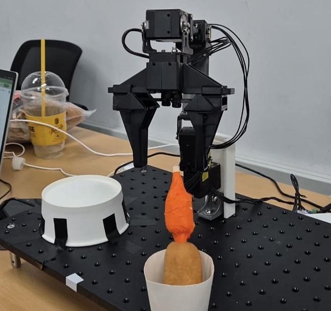
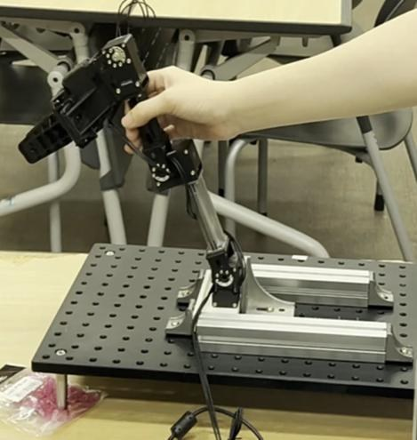
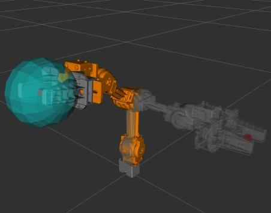
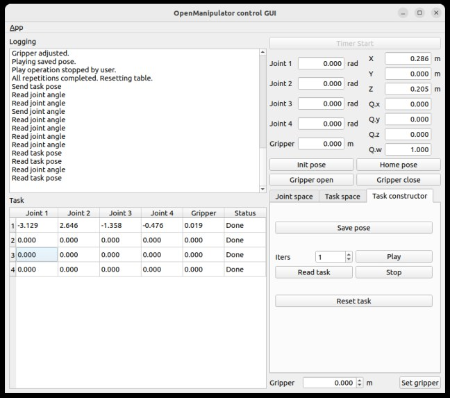

Robot Arm Handover Demo




In this project, I developed Python-based control code for an OpenManipulator-X in a ROS 2 Humble environment. I implemented a four-step human-facing task sequence in which the robot arm picks up a hot dog, transfers it, applies sugar, and hands it over to a person.
Although the project did not proceed to actual booth operation, preparing the demonstration helped me realize that robot motion should not only be technically feasible, but also predictable and safely acceptable to people.
In particular, through the hand-over scenario, I learned that safety distance, motion repeatability, and user experience are as important as the control logic itself. This experience became a key turning point that clarified my interest in human-robot interaction research.